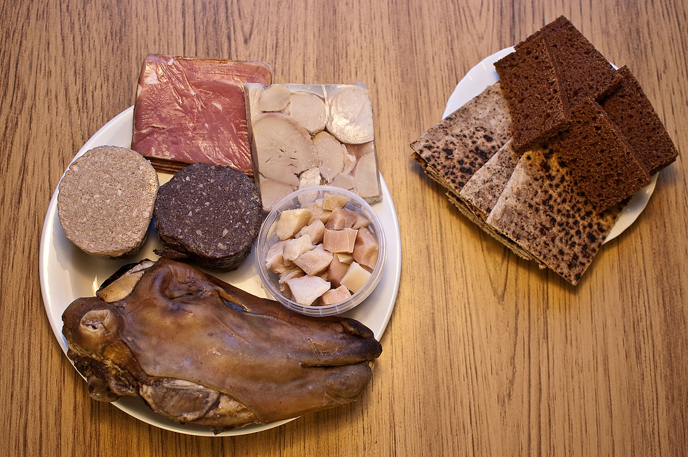

Gastronomia Tradicional
A gastronomia islandesa baseia-se em peixe, carne de cordeiro e laticínios, com técnicas de preservação como secagem e fermentação. Pratos como o Hákarl (tubarão fermentado), Svið (cabeça de ovelha) e o pão de centeio escuro (Rúgbrauð) são exemplos de uma culinária única e profundamente ligada à sua história de sobrevivência.